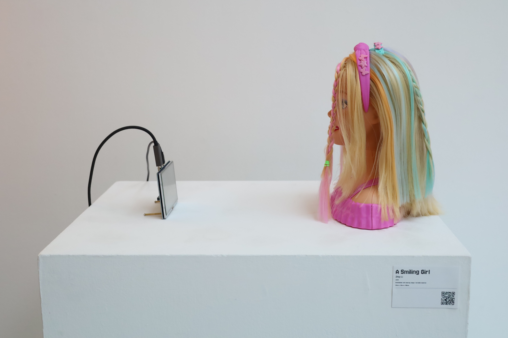
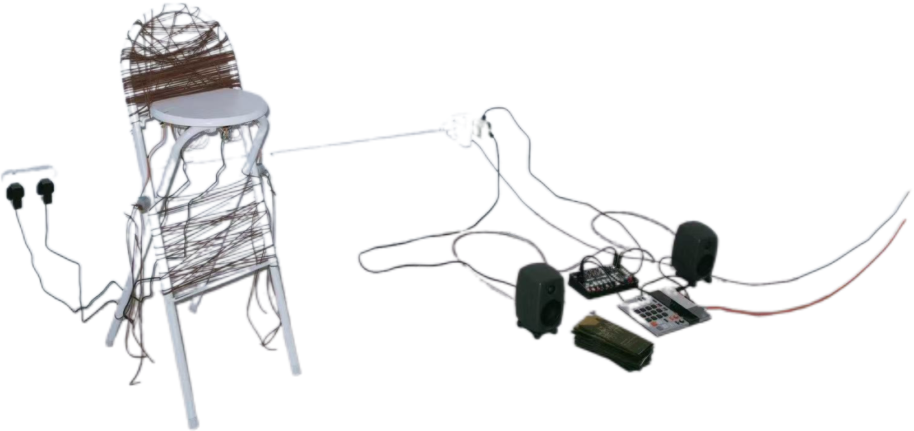

In 'The Smiling Angel', the artist's' silence 'and' gaze 'become a calm response to the power of viewing. In the context of this exhibition advocating collective collaboration and creative deconstruction, she is not a passive portrait, but a crystallization of power tension. Her silence is not blank, but a key that invites us to listen to the voices erased in the artistic mechanism.


Leather coils around the metal frame, while the chair strains to break free—my sculptural metaphor for the rebellious blues spirit of the 1970s. In 1971, Won’t Get Fooled Again didn’t sing of hope—it screamed through disillusion. This chair holds the moment blues fractured, transforming into something raw and awakening.
https://occhimagazine.com/reawakening-ealings-blues-through-design/